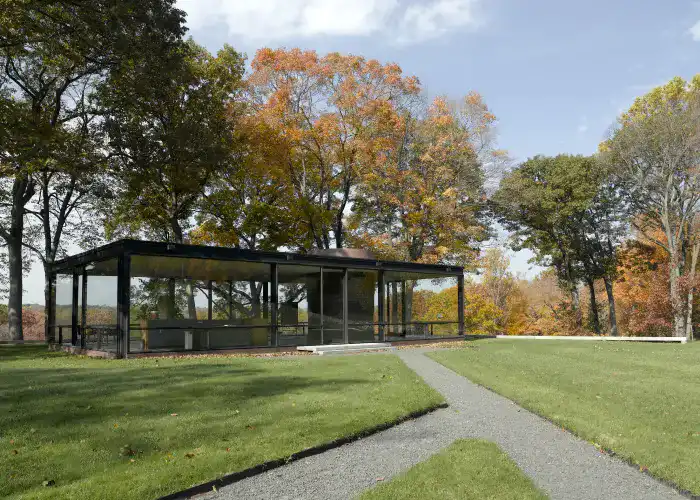
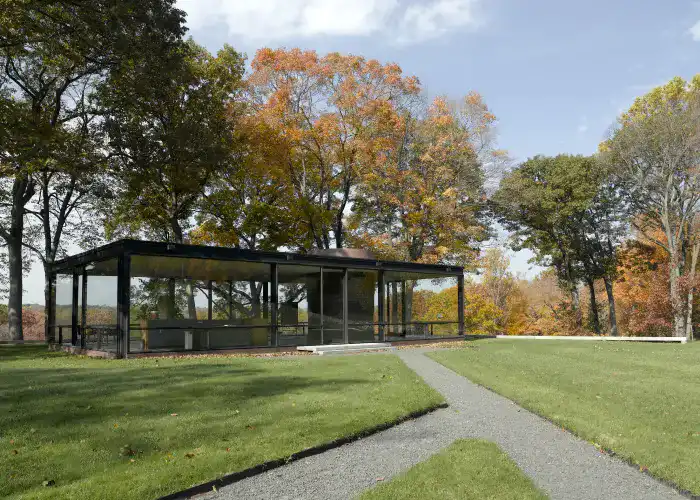

Glass House
La Glass House, conçue par l'architecte américain Philip Johnson, est une résidence emblématique située à New Canaan, dans le Connecticut. Construite entre 1949 et 1950, elle est caractérisée par ses murs entièrement vitrés, sans supports structurels visibles, créant ainsi un espace transparent et ouvert. La structure rectangulaire est surélevée par des piliers en acier, donnant l'impression que la maison flotte au-dessus du sol. La Glass House est souvent considérée comme un chef-d'œuvre du modernisme et de l'architecture minimaliste, incarnant les idées de transparence, d'ouverture et d'intégration harmonieuse avec son environnement naturel.
 


Images de la Glass House